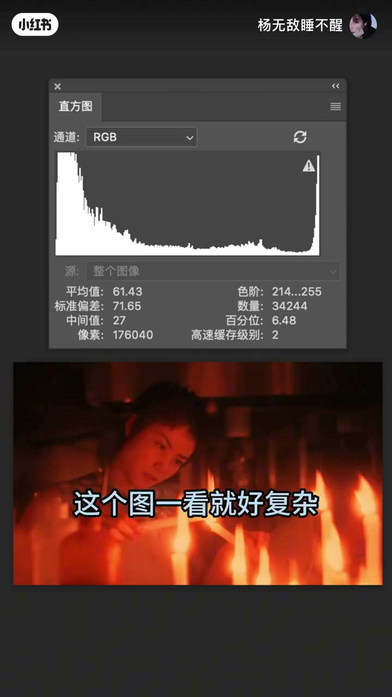
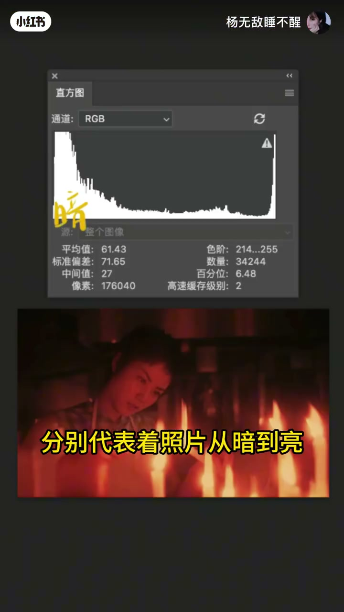
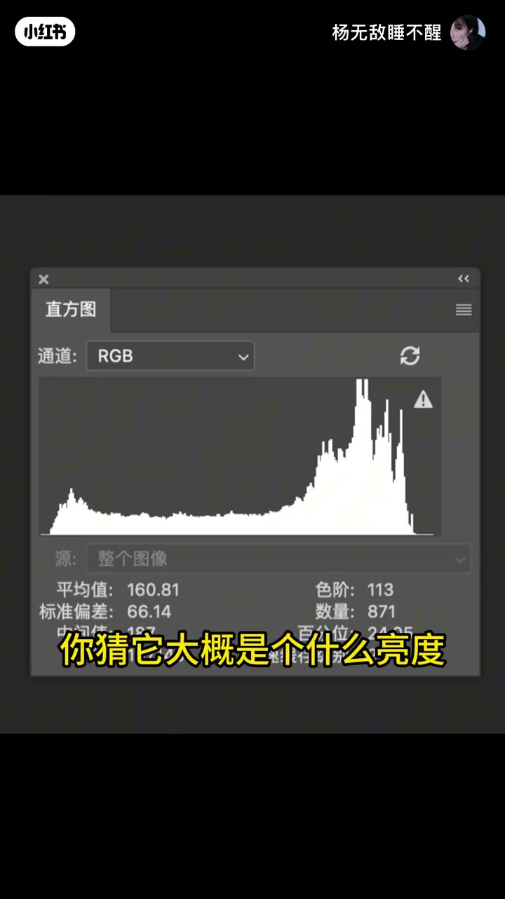
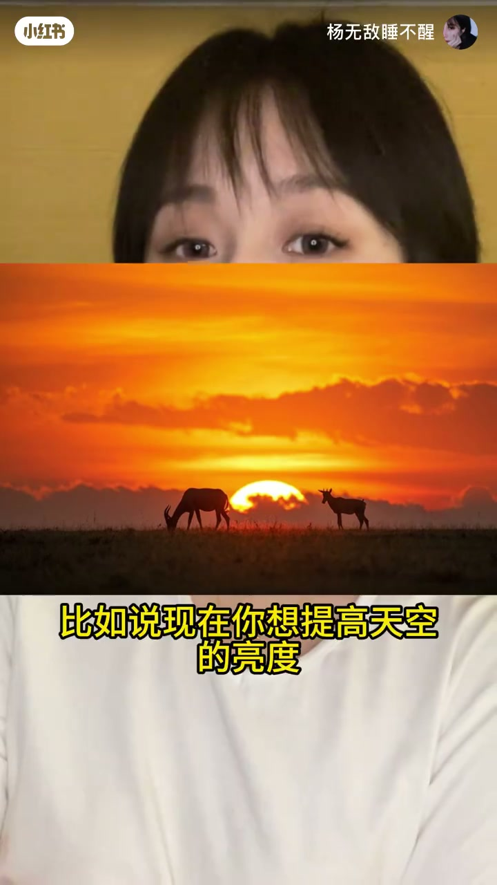
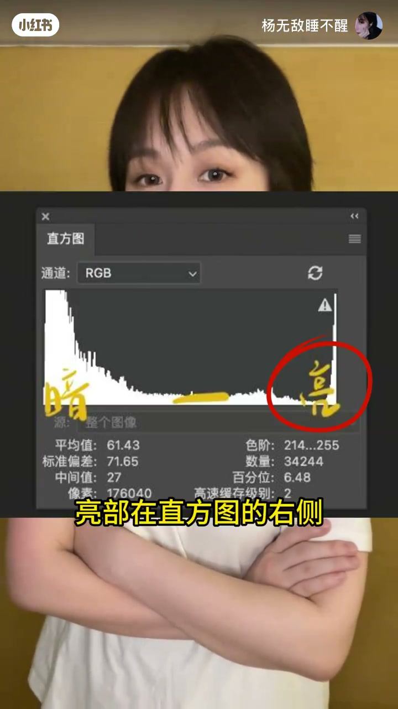
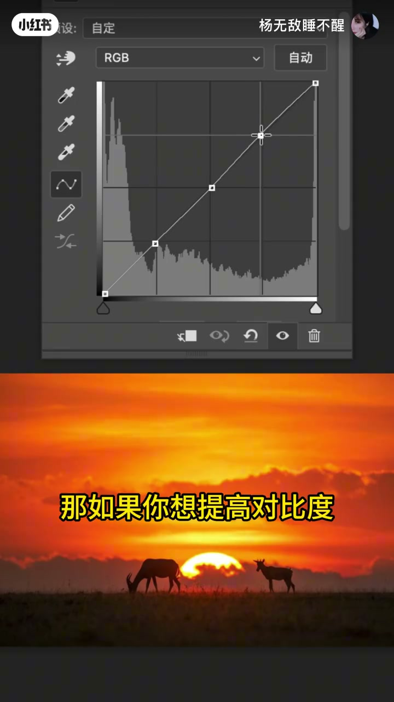
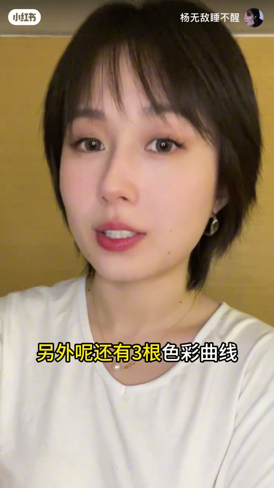
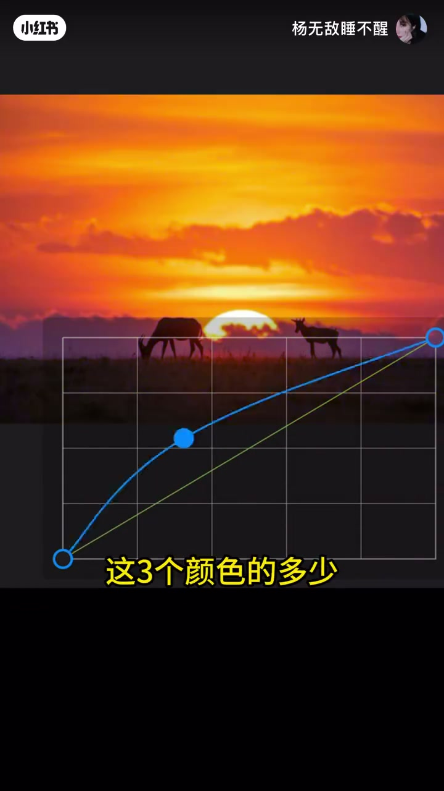
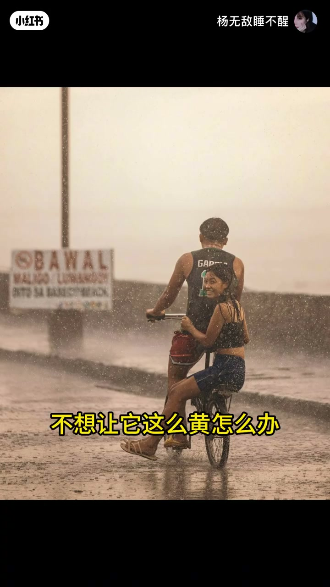

内容要点
一支 1 分 44 秒的曲线调色入门课：从一张照片扔进软件得到的直方图讲起，教你看懂暗部亮部、用打点拉曲线提亮天空、用 S 曲线提高对比度；再延伸到四根曲线（亮度 + 红绿蓝），最后演示如何用相反色把偏黄照片调回来。
知识结构
照片扔进修图软件，会得到一个直方图。
从左到右分别代表照片从暗到亮。左边面积大说明整体偏暗，靠右面积大则偏亮。
曲线调色基于直方图：想提高天空亮度就把右侧亮部往上拉；想提高对比度就把亮部拉高、暗部拉低，形成 S 形曲线。
曲线调色一共四根：亮度曲线，加上红、绿、蓝三根色彩曲线，可单独控制画面中三个颜色的多少。
照片偏黄就往黄色的相反色调——加蓝色，再降低红色，颜色就调过来了。还能控制亮暗部颜色、拯救偏色、还原肤色。
曲线调色的基础是看懂直方图：左暗右亮。亮度曲线调明暗（S 曲线加对比度），红绿蓝三根色彩曲线调颜色，相反色相加减即可校准偏色。
00:00-00:14曲线调色是啥
视频以常见的困惑开场：「修图软件里这个曲线调色是啥呀？」主讲人回应：「这个功能可好用了，我看好多软件里都有。」
「来，我教你。」他从一张照片讲起：「这是一张照片，把它扔到修图软件里，我们就会得到一个直方图。」看着复杂的一堆图形，听者想溜：「这个图一看就好复杂，我先走了。」主讲人拦住他：「别跑呀，不难。」

00:14-00:37看懂直方图：左暗右亮
「其实就是从左到右呢，分别代表着照片从暗到亮。」主讲人用一个直观的例子讲解：「比如你看这个直方图，它左边的面积更大，就说明这个照片整体偏暗。」
「同样啊，再给你一个直方图，先不给你看照片，你猜它大概是个什么亮度？」听者回答：「靠右的面积大，整体偏亮吧。」「你看这不会了吗？」——读懂直方图的分布，就等于读懂了照片的明暗构成。


00:37-00:59打点拉曲线：提亮与对比度
「曲线调色其实就是基于这个直方图做调整。」主讲人演示第一个操作：「咱们先在这个直线上打三个点，比如说现在你想提高天空的亮度——天空是照片中的亮部，亮部在直方图的右侧，所以我们要把右侧往上拉一点。」画面中天空随即变亮。
「那如果你想提高对比度，就把照片的亮部拉高，同时把暗部拉低，形成一个 S 形的曲线。」效果立竿见影，「你看效果明显吧」。



00:59-00:78四根曲线：亮度加三色
「那曲线能调颜色吗？」「可以啊。」主讲人引出完整体系：「曲线调色一共有四根曲线，刚才讲的是亮度曲线，另外呢，还有三根色彩曲线，分别代表红色、绿色和蓝色。」
「简单来说呢，它们可以单独地去控制画面当中这三个颜色的多少。刚开始用的时候，看这张图就够了，这是总结版本。」一张色彩关系图，成了入门的全部捷径。


00:78-01:44演练：把偏黄的照片调回来
「那咱们来演练一下，这张照片不想让它这么黄，怎么办？」主讲人给出调色方向：「应该往黄色的相反色去调，从这个图片上看，我们应该加蓝色。」
「加蓝色之后画面偏红，我们再去降低红色，颜色就调过来了。」听者感叹「这很方便啊」。「是啊，它还有很多用法，比如分别控制亮部和暗部的颜色、拯救偏色的照片还原肤色，或者这种戏剧性的海报风格。」最后留下一句：「行了，先讲这么多，不懂的再问我。」

完整转录（69段）
以下文本由 Whisper medium 模型自动转录，可能存在少量识别误差，已尽可能修正。
哎 修图软件里这个曲线调色（保留）是啥呀
这个功能可好用了
我看好多软件里都有
但是我一直都不会用
来我教你
这是一张照片
把它扔到修图软件里
我们就会得到一个直方图（保留）
这个图一看就好复杂
我先走了
别跑呀
不难
其实就是从左到右呢
分别代表着照片从暗到亮
比如你看这个直方图（保留）
它左边的面积更大
就说明这个照片整体偏暗
同样啊
再给你一个直方图（保留）
先不给你看照片
你猜它大概是个什么亮度
靠右的面积大
整体偏亮吧
你看这不会了吗
然后呢
曲线调色（保留）其实就是基于这个直方图（保留）做调整
那咱们先在这个直线上打三个点（保留）
比如说现在你想提高天空的亮度
那天空是照片中的亮部
亮部在直方图（保留）的右侧
所以我们要把右侧往上拉一点
你看天空是不是变亮了
那如果你想提高对比度（保留）
就把照片的亮部拉高
同时把暗部拉低
形成一个S形的曲线
你看效果明显吧
哦 明白了
那曲线能调颜色吗
可以啊
曲线调色（保留）一共有四根曲线
刚才讲的是亮度曲线
另外呢
还有三根色彩曲线（保留）
分别代表红色
绿色和蓝色
简单来说呢
它们可以单独的去控制
画面当中这三个颜色的多少
刚开始用的时候
看这张图就够了
这是总结版本
那咱们来演练一下
这张照片不想让它这么黄
怎么办
应该往黄色的相反色去调
从这个图片上看
我们应该加蓝色
加蓝色之后画面偏红
我们再去降低红色
颜色就调过来了
这很方便啊这个
是啊
它还有很多用法
比如分别控制亮部和暗部的颜色
拯救偏色的照片还原肤色
或者这种戏剧性的海报风格
行了 先讲这么多
不懂得再问我